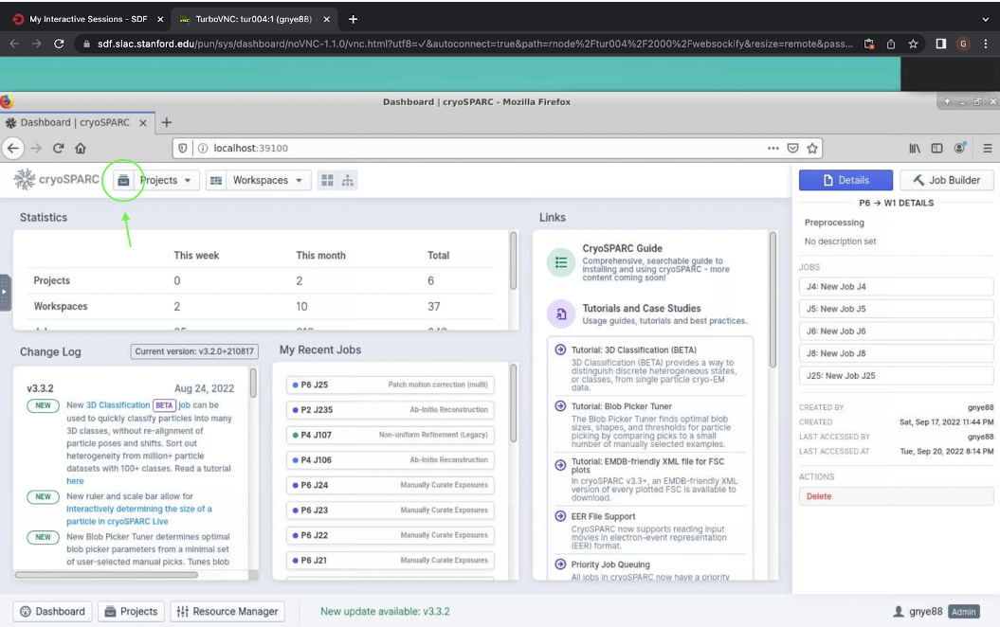
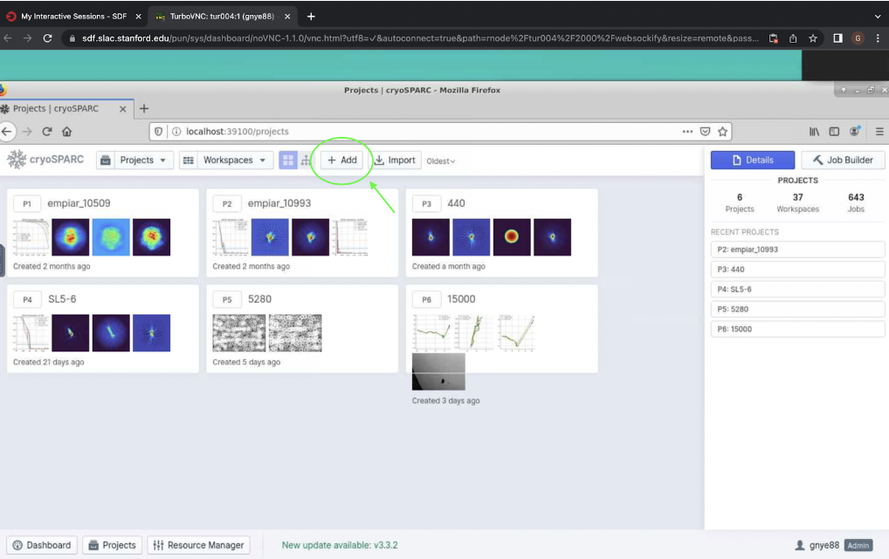
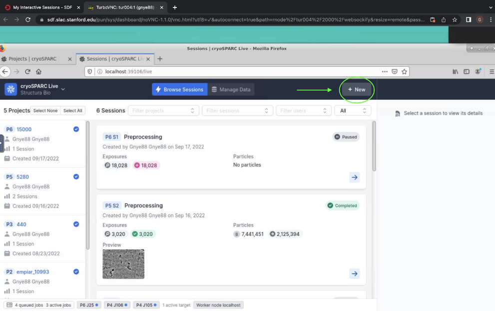
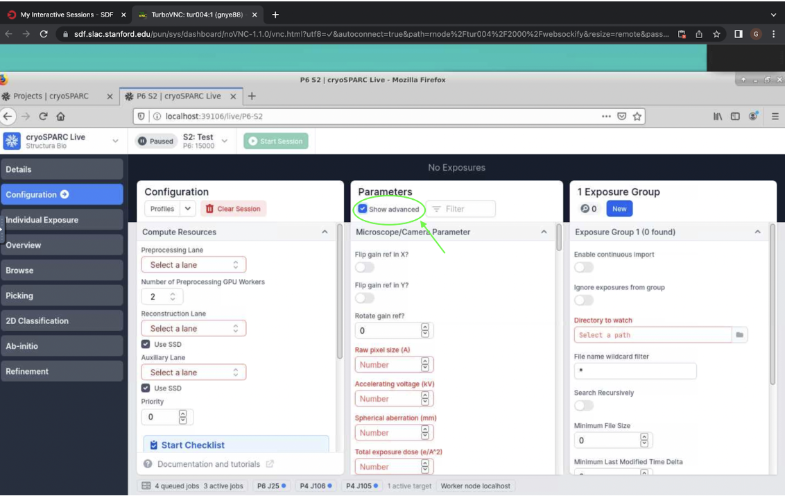
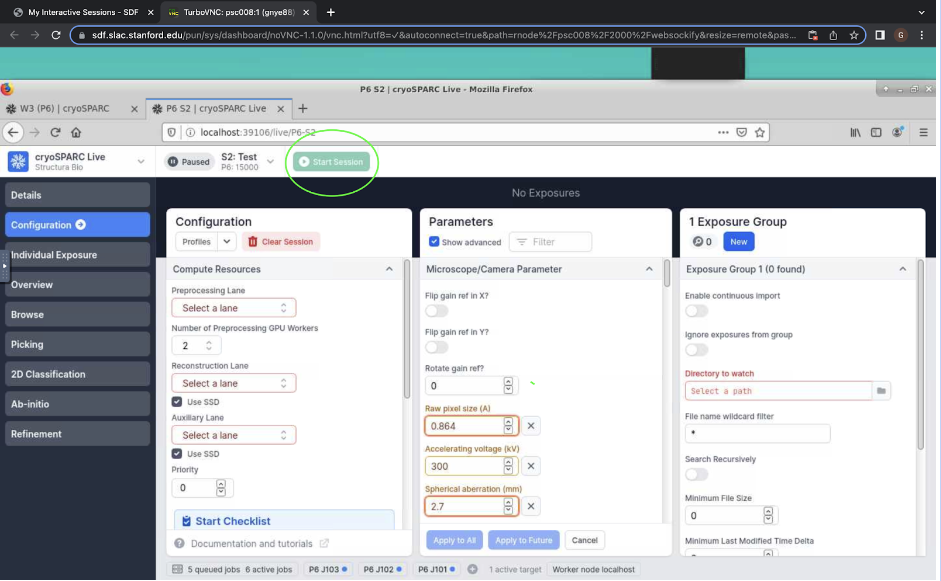
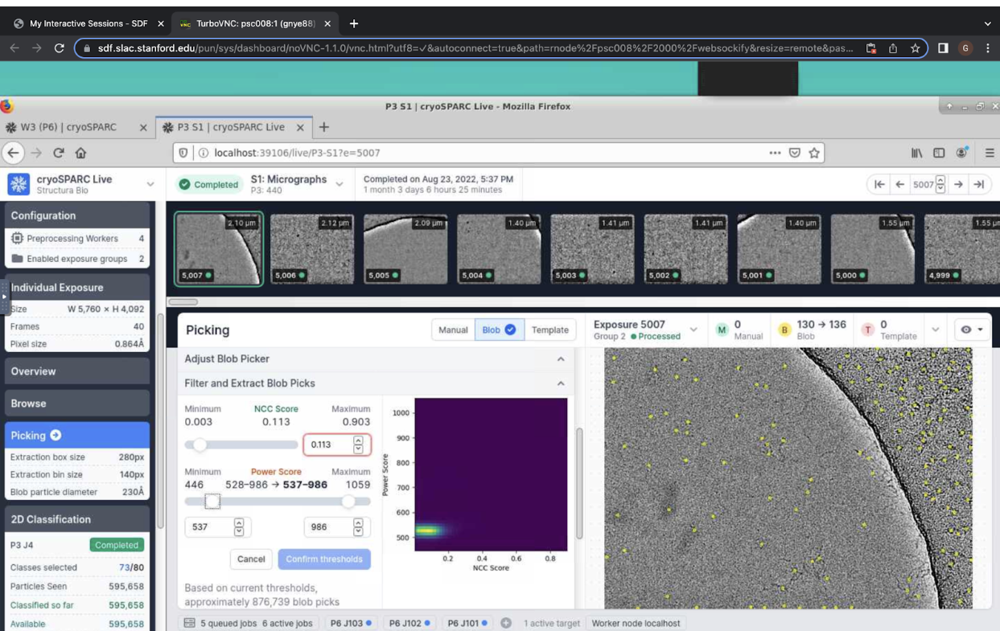

Live Processing
Live Processing#
Goal: pre-process, curate, and begin picking particles during live data collection on the microscope.
While collecting data, the microscope is collecting thousands of movies of the selected holes and squares on your grid. You can continuously import these movies while they are still being collected, where it will begin the steps of pre-processing, particle picking, and even 2D classification or other steps. First, these movies must be compiled into a single micrograph, which involves processing the motion of the sample that occurred after it was hit with the electron beam, as well as downweighting the radiation damage done to the samples. Then, the contrast transfer function (CTF) for each micrograph must be calculated, which calculates the resolution and defocus of each micrograph. Finally, micrographs can be automatically or manually curated, to eliminate those with bad ice or resolution. Additionally, the processes of picking particles and 2D classification can be started here while still collecting and importing data.
TODO
Before you can begin processing live, you must start a new project in regular cryosparc. Open your regular cryosparc desktop (localhost:39100, localhost:39200, etc.) and click the icon to the left of the projects tab at the top (shown in Figure 1). This will open a screen which should show all current projects.
 Figure 1. Button from step 1 to begin processing data live in cryosparc, shown circled in green.
Next, click “Add” at the top, shown in Figure 2. This will open a pop-up which will allow you to give a title to the project as well as the directory where it should be stored. Finish by clicking “Create”.
 Figure 2. “Add” button which allows you to start a new project in cryosparc.
Now you can start your cryosparc live session. Open your cryosparc live desktop (add 6 to your port, e.g. localhost:39106), and click “New” at the top right hand corner to start a new live session (Figure 3). This will open a pop-up window where you can select your new project and enter a title (e.g. “Preprocessing). Now click “Create Session”. This should take you to a new screen where you can configure the session.
 Figure 3. Starting a new session in cryosparc live.
Next, you will configure your session. You will see three columns, the left labeled “Configuration”, the middle labeled “Parameters”, and the right labeled “1 Exposure Group”. In the left column, you must select a preprocessing lane, reconstruction lane, and auxiliary lane. Click on each of these options and select “Lane default (node)”. The number of preprocessign workers is the number of available GPUs - depending on the speed of collection and how far in the processing pipeling you go, you will need 2-4 GPUs to keep up with live processing.
Next, move to Parameters. First, check the box at the top to show advanced settings (Figure 4).
 Figure 4. Show advanced settings in parameters on cryosparc live.
Enter the settings for the microscope/camera parameters. If the scope you are using requires it, choose the options to flip or rotate the gain reference, according to the settings of that microscope. Next, enter the raw pixel size, accelerating voltage, spherical aberration, and total exposure dose. All these settings are decided when data collection is set up on the microscope.
Leave parameters for Motion Correction and CTF estimation as defaults (unless otherwise required).
Note: for cryosparc patch-motion with falcon camera, you will need to exclude final frame (e.g. with 40 frames, put 39 as it counts from 0).
Now enter desired parameters for the blob picker. This works as a simple picker which finds spheres or other shapes of a specified size. Suggested parameters for this step are shown below in Table 1.
Note that the minimum diameter for RNA is a head-on view of a helix, which corresponds to ~20 A. For maximum particle diameter, 250 A is a generous estimate for the side view of a helix, and this can be adjusted as preferred according to the expected size of whatever particle you are processing.
Elliptical blob is used because this is the closest to the shape of a helix from the side.
Lowpass filter is 5 A as a good default, but this can be adjusted visually if the contrast is found to be too high/low. A larger lowpass filter will increase the contrast while decreasing resolution.
The minimum separation distance is calculated based on the minimum particle diameter, so 2.5 is chosen so that particles will be at minimum 50 A apart.
Parameter
Suggested
Minimum particle diameter (A)
20
Maximum particle diameter (A)
250
Use circular blob
Yes
Use elliptical blob
Yes
Use ring blob
No
Lowpass filter to apply (A)
5
Min separation dist (diameters)
2.5
Table 1. Suggested parameters for blob picker in cryosparc live.
Now enter the parameters for the Template Picker. The template picker chooses particles resembling a given set of templates, which are generated through a round of 2D classification. This first round of 2D classification can be done using the particles extracted by the blob picker. Suggested parameters are shown below in Table 2.
Note that the suggested particle diameter is the most flexible parameter here. Enter some value according to your expectation for the particle you are processing. Ensure that the min separation distance corresponds to at least ~50 A separation between particles.
Parameter
Suggested
Particle Diameter (A)
200
Lowpass filter to apply (A)
5
Angular sampling (degrees)
5
Min. separation dist (diameters)
0.25
Table 2. Suggested parameters for template picker in cryosparc live.
Next, enter parameters for particle extraction. For now, leave the score threshold min, power threshold min, and power threshold max blank (you will choose these visually later on). The images of the particles must be extracted from the larger micrograph in order to be used for 2D classification. You must specify the size of the box taken from the larger micrograph - it should be large enough to contain the entire particle, but not too large so that the particle can be seen clearly.
Calculate this by using the estimated maximum diameter of the particle and the raw pixel size of the data. Overestimate box size by about 1.5-2x the max diameter of the particle. Round your calculated box size to the closest of the following values:
16, 20, 24, 28, 32, 36, 40, 48, 56, 60, 64, 72, 80, 84, 96, 100, 108, 112, 120, 128, 140, 144, 160, 168, 180, 192, 196, 200, 216, 224, 240, 252, 256, 280, 288, 300, 320, 324, 336, 360, 384, 392, 400, 420, 432, 448, 480, 500, 504, 512, 540, 560, 576, 588, 600, 640, 648, 672, 700, 720, 756, 768, 784, 800, 840, 864, 896, 900, 960, 972, 980, 1000, 1008, 1024, 1080, 1120, 1152, 1176, 1200, 1260, 1280, 1296, 1344, 1372, 1400, 1440, 1500, 1512, 1536, 1568, 1600, 1620, 1680, 1728, 1764, 1792, 1800, 1920, 1944, 1960, 2000
If your box size is larger than 200 pixels, you should fourier crop it. Choose a value for fourier cropping at or below 200 pixels. Make sure that you are choosing a value from the above list here as well.
Click “Apply to All” at the bottom of the center column.
Finally, add your exposure groups on the third column on the right. First, check enable continuous import.
Then, select the directory in which the exposures are located under “Directory to watch”. You should also enter the correct wildcard filter and select “Search Recursively” if the files may be located within internal directories.
Add the path to the gain reference image under “Gain Reference Path”.
Click “Enable” at the bottom of the rightmost column.
Finally, click “Start Session” at the top.
 Figure 5. “Start Session” button for cryosparc live.
Now, you should see your micrographs begin to process up at the top. You will be able to manually curate your micrographs as they come in. To remove a micrograph, click it and press “r” on your keyboard. You can also click “Individual Exposure” on the left to view information about each micrograph, including 2D and 3D CTFs and motion correction.
You can also begin to view particle picks by clicking on “Picking” on the left. This will display the parameters for the active picker. Here, you can also filter and extract blob picks by choosing minimum NCC score and the range of power scores. Use the sliders to visually adjust the particle picks for each micrograph.
Click “Confirm thresholds” and then “Apply to All” in order to apply picker filters to all micrographs and extract particles.
 Figure 6. Cryosparc live NCC and power threshold sliders for blob picker.
To extract the pre-processed micrographs and particles extracted from the blob picker, go to the “Overview” tab on the left, and click “Extract all Micrographs” and “Extract all Particle Picks”. Now you can move your data processing to regular cryosparc.